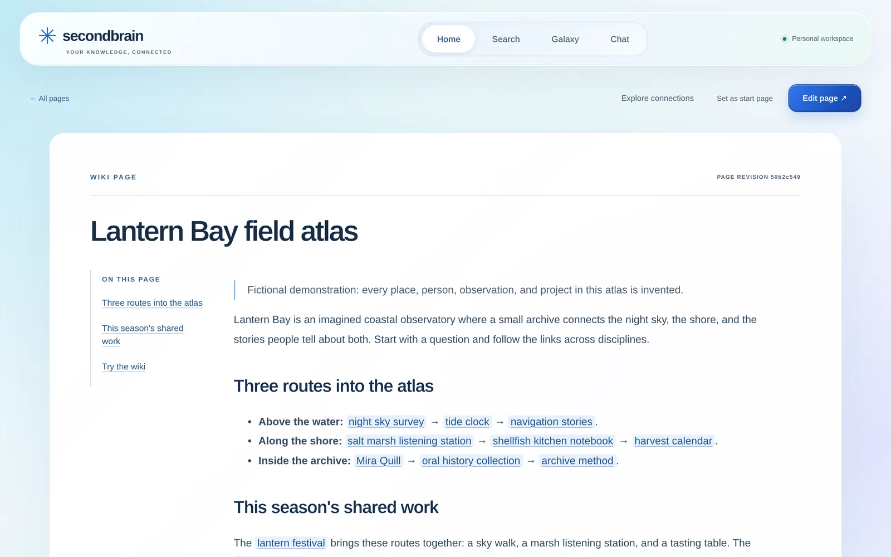
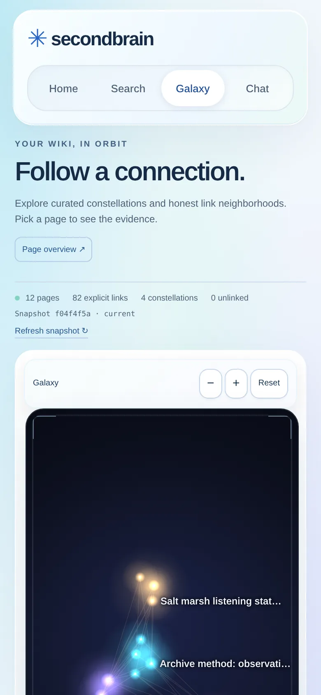

For humans
A fast, calm web app
Open a page, edit in Markdown, follow backlinks, jump through history. Your notes stay plain Markdown, rendered in a calm, glassy reader made for long sessions.


- Revision-safe Markdown editor with page history
- Wikilinks, backlinks and direct URLs
- Hybrid search with instant lexical results